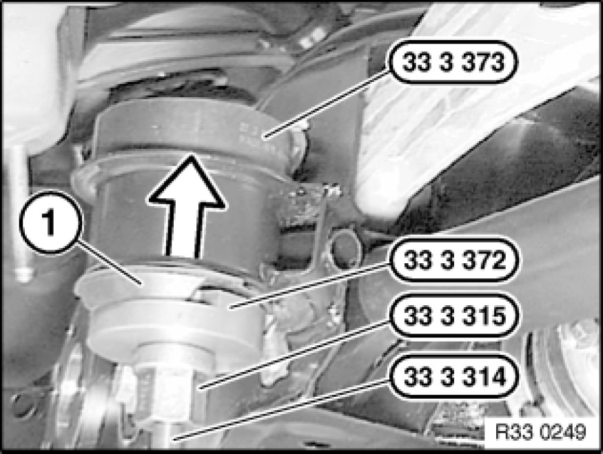

Replacing Two Rubber Mounts for Rear Axle Carrier
33 33 101 - Replacing two rubber mounts for rear axle carrier

Special tools required:
- 33 3 314
- 33 3 315
- 33 3 371 33 3 370 Set of Tools
- 33 3 372 33 3 370 Set of Tools
- 33 3 373 33 3 370 Set of Tools
- 33 4 140 33 4 140 Universal Support
- 33 4 142 33 4 140 Universal Support
- 33 4 145 33 4 140 Universal Support
- 33 4 147 33 4 140 Universal Support
- 33 4 155 33 4 150 Removal and Installation Tool

Warning!
Danger of explosion!
Do not point air jet from hot air blower at fuel tank!

Necessary preliminary tasks:
- Lower rear axle carrier Lowering/Raising Rear Axle Carrier
Assemble special tool 33 4 140 33 4 140 Universal Support with 33 4 142 33 4 140 Universal Support and 33 4 147 33 4 140 Universal Support.
Unscrew feed handle (1). If necessary, mount extension piece (3) on special tool 33 4 145 33 4 140 Universal Support with new screw (2).
Position special tools 33 4 140 33 4 140 Universal Support, 33 4 155 33 4 150 Removal and Installation Tool, 33 3 371 33 3 370 Set of Tools, 33 3 372 33 3 370 Set of Tools and nut (1) on openings of rubber mount.
Note:
Ensure it is correctly supported on bushing of rear axle carrier.
Using a hot air blower, heat bearing bushing at max. 600 °C outlet temperature for approx. 2 minutes.
Pull out rubber mount by turning special tool 33 4 155 33 4 150 Removal and Installation Tool.
Coat rubber mount with Circo Light anti-friction agent.
Important!
Front rubber mounts differ:
Rubber mount VR = front right with elongated hole (1)
Rubber mount VL = front left
When rubber mount is fitted, arrows (2) must point down longitudinal axis of vehicle.

Draw in rubber mount with special tools 33 3 314, 33 3 315, 33 3 372 33 3 370 Set of Tools and 33 3 373 33 3 370 Set of Tools as far as it will go.
After installation:
- Check seating of coil spring with spring pads, correct if necessary
- Perform chassis alignment check